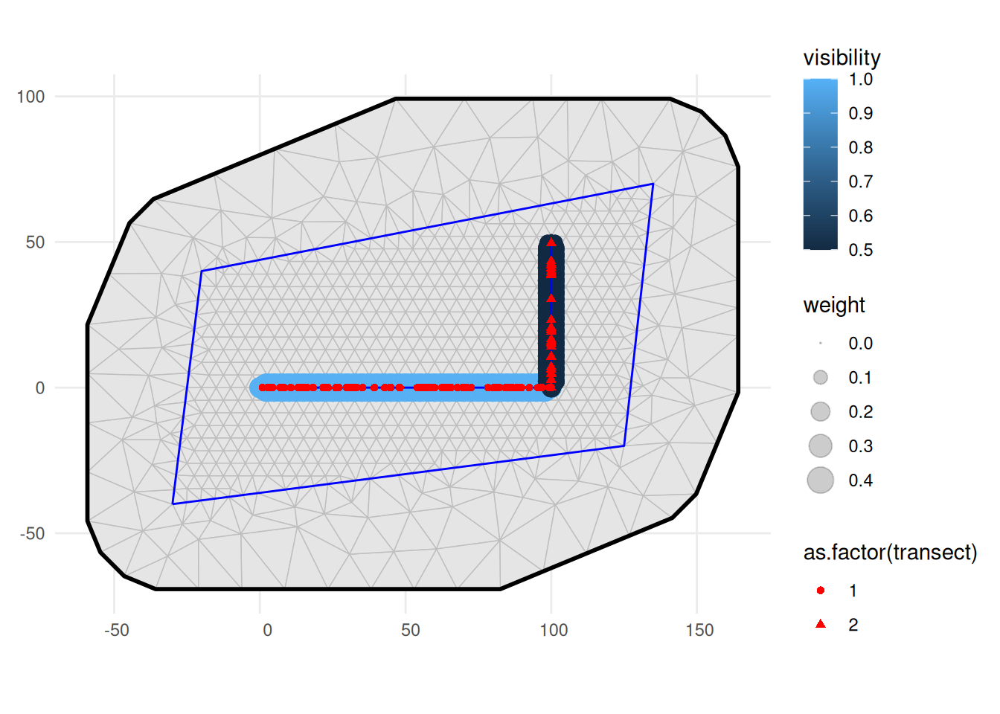

LGCPs - Distance sampling and per-transect covariates
Finn Lindgren
Generated on 2026-05-26
Source:vignettes/articles/2d_lgcp_per_transect_covars.Rmd
2d_lgcp_per_transect_covars.RmdSet things up
library(INLA)
library(inlabru)
library(tibble)
library(sf)
library(fmesher)
library(dplyr)
library(ggplot2)
library(fmesher)
library(RColorBrewer)Construct sampler transects, with a per-transect covariate,
visibility:
samplers <- st_sf(
bind_rows(
tibble(
transect = 1L,
geometry = fm_as_sfc(fm_segm(rbind(c(0, 0), c(100, 0)),
is.bnd = FALSE
)),
visibility = 1
),
tibble(
transect = 2L,
geometry = fm_as_sfc(fm_segm(rbind(c(100, 0), c(100, 50)),
is.bnd = FALSE
)),
visibility = 0.5
)
)
)Point observations, with marks distance and
transect:
intensity <- 0.1
set.seed(1324L)
N_expected <- c(100 * 10 * intensity * 1, 50 * 10 * intensity * 0.5)
N <- c(rpois(1, N_expected[1]), rpois(1, N_expected[2]))
obs_coord <- rbind(
tibble(
x = runif(N[1], 0, 100),
y = 0,
transect = 1L,
distance = abs(runif(N[1], -5, 5))
),
tibble(
x = 100,
y = runif(N[2], 0, 50),
transect = 2L,
distance = abs(runif(N[2], -5, 5))
)
)
observations <- st_as_sf(obs_coord, coords = c("x", "y"))Domain of interest:
bnd <- fm_as_sfc(fm_segm(
rbind(c(-30, -40), c(125, -20), c(135, 70), c(-20, 40), c(-30, -40)),
is.bnd = TRUE
))Computational meshes:
mesh <- fm_mesh_2d(
loc = fm_hexagon_lattice(bnd, edge_len = 5),
boundary = bnd,
max.edge = c(10, 25)
)
# Distance mesh for integration scheme
distance_mesh <- fm_mesh_1d(
seq(0, 5, length.out = 21),
boundary = "free"
)Transect integration scheme, including per-transect covariates:
ips <- fm_int(
domain = list(
geometry = fm_subdivide(mesh, 1),
distance = distance_mesh
),
samplers = samplers
)Join per-transect covariates into the point observations, so they are available for model fitting:
obs_with_transect_info <- observations |>
left_join(as_tibble(samplers),
by = "transect",
suffix = c("", ".sampler")
)
ggplot() +
geom_fm(data = mesh) +
geom_sf(data = ips, aes(size = weight, color = visibility), alpha = 0.2) +
scale_size_area() +
geom_sf(data = samplers, color = "blue") +
geom_sf(
data = obs_with_transect_info, aes(shape = as.factor(transect)),
color = "red"
) +
theme_minimal()
Model fitting
Fitting model with visibility.
cmp <- ~ Intercept(1) +
visibility(log(visibility), model = "linear") +
twosided(log(2), model = "const")
obs <- bru_obs(
formula = geometry + distance ~ Intercept + visibility + twosided,
family = "cp",
domain = list(
geometry = fm_subdivide(mesh, 1),
distance = distance_mesh
),
samplers = samplers,
data = obs_with_transect_info,
options = list(control.inla = list(int.strategy = "eb"))
)
fit_vis <- bru(
cmp,
obs,
options = list(
bru_verbose = FALSE
)
)
summary(fit_vis)
#> inlabru version: 2.14.1
#> INLA version: 26.05.21
#> Latent components:
#> Intercept: main = linear(1)
#> visibility: main = linear(log(visibility))
#> twosided: main = const(log(2))
#> Observation models:
#> Model tag: <No tag>
#> Family: 'cp'
#> Data class: 'sf', 'tbl_df', 'tbl', 'data.frame'
#> Response class: 'numeric'
#> Predictor: geometry + distance ~ Intercept + visibility + twosided
#> Additive/Linear/Rowwise: TRUE/TRUE/TRUE
#> Used components: effect[Intercept, visibility, twosided], latent[]
#> Time used:
#> Pre = 0.322, Running = 0.231, Post = 0.0356, Total = 0.588
#> Fixed effects:
#> mean sd 0.025quant 0.5quant 0.975quant mode kld
#> Intercept -2.471 0.108 -2.684 -2.471 -2.258 -2.471 0
#> visibility 0.335 0.293 -0.239 0.335 0.908 0.335 0
#>
#> Marginal log-Likelihood: -347.98
#> is computed
#> Posterior summaries for the linear predictor and the fitted values are computed
#> (Posterior marginals needs also 'control.compute=list(return.marginals.predictor=TRUE)')Posterior predictive interval and median for the intensity (true value 0.1)
rbind(
True = c(NA, intensity, NA),
Estimated = exp(fit_vis$summary.fixed[1, c(
"0.025quant",
"0.5quant",
"0.975quant"
)])
)
#> 0.025quant 0.5quant 0.975quant
#> True NA 0.10000000 NA
#> Estimated 0.06832058 0.08450347 0.1045196Note: The true expected point counts for the two transects, taking the visibility into account are 100 and 25, respectively. The observed point counts were 85 and 34, respectively.